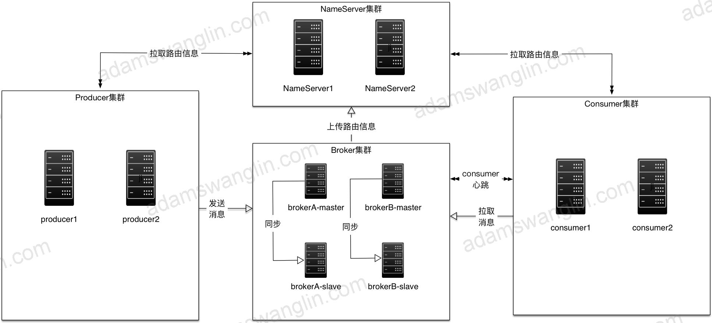
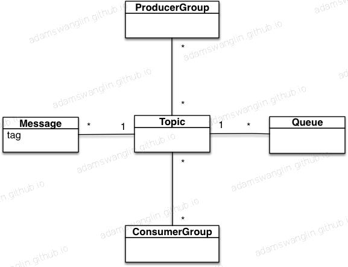
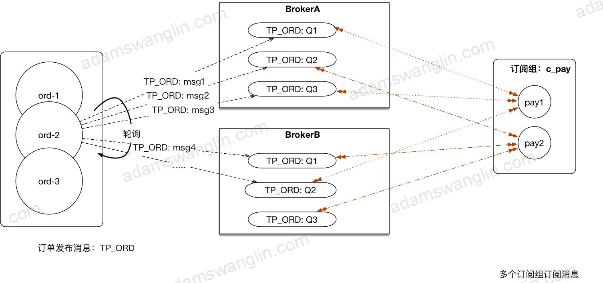
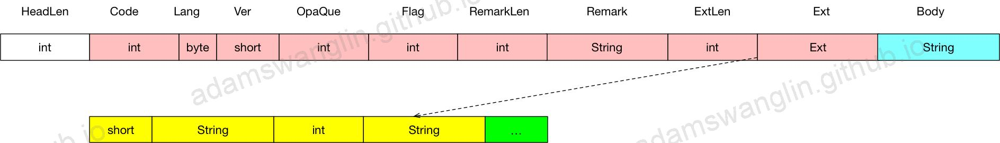

本文介绍RocketMQ总体框架；包括系统构成，基本概念等。
总体架构

RocketMQ
Apache RocketMQ是一款具有低延迟，高性能和可靠性，可灵活扩展的分布式消息平台。它由四部分组成：NameServer，Broker，生产者和消费者。它们中的每一个都可以在没有单点故障的情况下进行水平扩展。
核心系统
NameServer
NameServer是一个轻量级的服务注册中心。每个NameServer节点中有全量的Broker中topic的路由信息。
Broker
Broker负责消息存储，以topic为维度支持轻量级的队列，单机可以支撑上万队列规模，支持消息推拉模型，具备多副本容错机制（2副本或3副本）、强大的削峰填谷以及上亿级消息堆积能力，同时可严格保证消息的有序性。
ProducerClient
用户部署的消息发布客户端。
ConsumerClient
用户部署的消息订阅客户端。支持push和pull模型，支持广播模式和集群模式。
核心概念

Topic
topic是消息的一种分类，消息发送/接收都要指定topic。topic和生产组/消费组之间是多对多的关系。
Queue
topic的细分。
Tag（EventCode）
每条发送的message都可以有一个tag；这样同一个topic可以按tag区分不同的业务场景。
在实践上，一个业务系统使用一个topic，用不同的tag区分不同的消息。
ConsumerGroup
在集群模式下（默认），一个消息只会被同一消费组中的一个节点消费；同一消费组的多个节点均衡的消费topic。在实践上，一个应用/微服务一个消费组。
具体场景说明

消息发送
1.在Broker里配置Topic及其Queue数量
例子里在BrokerA和BrokerB里对TP_ORD分别配置了3个Queue。
2.订单发送主题为TP_ORD的消息
集成在订单系统里的MQ Client先找到配置了TP_ORD的Broker和对应Queue，发现总共6个Queue（BrokerA，BrokerB各三个）；然后轮询的方式向这6个Queue里发送消息。
消息消费
1.客户端负载均衡
支付订阅组c_pay订阅了TP_ORD的消息；
c_pay先找到配置了TP_ORD的Broker和对应Queue，发现总共6个Queue（BrokerA，BrokerB各三个）；c_pay找到订阅组c_pay总共有两个节点。
c_pay对6个queue和两个节点分别排序，并将6个queue平均分配给两个节点：
pay_1节点确定了自己拉取消息的queue为：BrokerA上的TP_ORD:Q1,TP_ORD:Q3和BrokerB上的TP_ORD:Q2；pay_2节点确定了自己拉取消息的queue为：BrokerA上的TP_ORD:Q2和BrokerB上的TP_ORD:Q1,TP_ORD:Q3。
2.拉取消息
3.更新offset
系统交互
交互方式
netty的tcp自定义协议交互
请求内容
- HeadLength: 请求头长度
- Head：请求头
- Body：请求体

请求头：
| 字段 | 类型 | 说明 |
|---|---|---|
| Code | int | RequstCode预先定义的请求码 |
| Language | byte | 语言，0: java; 1:c++等 |
| Version | short | RocketMQ版本 |
| OpaQue | int | 请求端自增，响应里返回 |
| Flag | int | 标识位；标记是请求还是响应，请求的类型 |
| RemarkLength | int | 备注信息长度 |
| Remark | String | 备注信息，一般用作失败响应备注 |
| ExtLen | int | |
| Ext | Map<String, String> |
netty
封装：封装了统一的RemotingServer 和RemotingClient接口，封装了同步请求，异步请求+回调。
交互内容
除了生产消费外，其他交互包括：
client到broker
| RequestCode | 时间点 | 请求体 | 响应体 | 作用 |
|---|---|---|---|---|
| CHECK_CLIENT_CONFIG 检查客户端配置 |
consumer初始化 | 订阅信息 | 检查client，broker是否兼容。主要判断filter模式。 | |
| GET_CONSUMER_LIST_BY_GROUP 查询统一消费组的consumer集合 |
rebalance | consumerGroup | consumerIdList | |
| HEART_BEAT 心跳 |
启动；新增注册；定时（默认30s） | client信息（组名，id，消息模式：广播/集群，消费模式）等 | broker版本 | client注册信息同步给broker；如果client信息有变化（例如订阅改变/新增client节点），broker通知同组的其他client |
| UNREGISTER_CLIENT 取消注册 |
client关闭 | cleint信息 | 取消注册 |
broker到client
| RequestCode | 时间点 | 请求体 | 响应体 | 作用 |
|---|---|---|---|---|
| NOTIFY_CONSUMER_IDS_CHANGED 通知消费变化 |
client注册信息变化 | 消费组 | 通知client rebalance | |
| RESET_CONSUMER_CLIENT_OFFSET 重置消费偏移量 |
admin/控制台修改offset | topic，c_group，时间戳 | broker版本 | 重新消费/跳过消费 |
broker到nameserver
| RequestCode | 时间点 | 请求体 | 响应体 | 作用 |
|---|---|---|---|---|
| REGISTER_BROKER broker注册 |
创建更新topic；Broker 启动；定时30S | broker集群名，broker地址，master地址，brokerId，topic配置 | 更新路由信息到naameserver | |
| UNREGISTER_BROKER 取消注册 |
Broker关闭 | broker集群名，broker地址，master地址，brokerId | 更新路由信息到nameserver | |
client到nameserver
| RequestCode | 时间点 | 请求体 | 响应体 | 作用 |
|---|---|---|---|---|
| GET_ROUTEINTO_BY_TOPIC 获取topic的路由信息 |
发送消息topic路由信息本地未找到；定时（默认30s），拉取consumer和producer的topic路由 | topic | 更新路有信息到client |